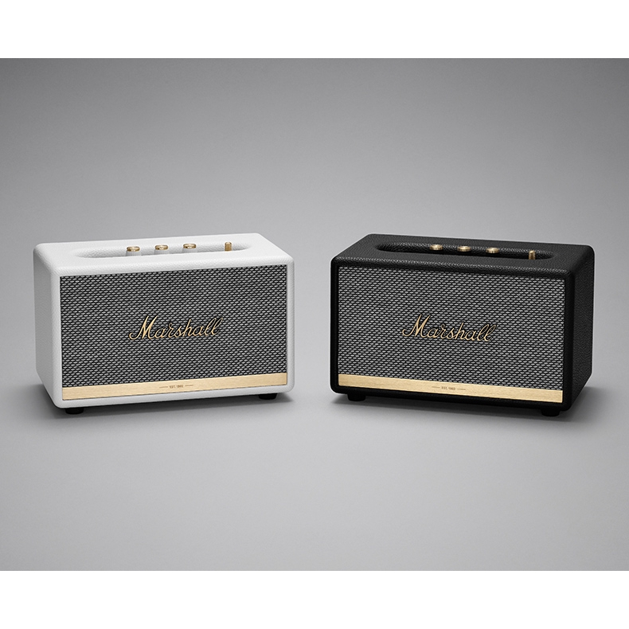

Recenze Marshall Acton II?

Marshall Acton II je nepřenosný reproduktor pro domácí použití. Cena za tento reproduktor činí 5500Kč, ale ve výprodejích ho lze sehnat o zhruba tisícovku levněji. Pojďme se podívat, zda kvalita reproduktoru odpovídá jeho ceně.
Kvalita zvuku
Kvalita zvuku je nadprůměrná. Zvuk je ve všech ohledech pěkně čistý. Acton dokáže ozvučit celou místnost. V této kategorii Acton vyniká.
Cením, že reproduktor není přebasovaný, což se často stává u levnějších kusů. Zároveň zvuk ale není plochý a basy se krásně podílejí na celkovém zážitku. Na zadní straně reproduktoru nalezneme Bass reflex. Středy a výšky hrají přesně tak, jak bych si přál.
Reproduktor je velmi silný, takže s 50% hlasitostí bohatě ozvučí celou místnost. Pokud zvuk porovnáme se stereo reproduktory, tak tento samozřejmě předčí, takže pokud vám nestačí mono reproduktor, tak tento není pro vás.
Funkcionality
Počet funkcionalit není nikterak závratný, ale je dostačující. Reproduktor nabízí přesně ty základní funkcionality, bez kterých byste se neobešli, ale ne moc navíc.
Najdeme zde tlačítko play/pause, které mi funguje pouze při přehrávání přes Bluetooth. Dále nabízí Bluetooth, které mi fungovalo pouze přes smartphone. Reproduktor má nahoře 3 potenciometry. Jedním se mění hlasitost, druhým basy a posledním výšky.
Funkcionality, které některé konkurenční výrobky nabízejí jsou například telefonování, optický vstup a stereo. Proto zvažte, jestli něco z toho pro vás není klíčové.
Design
Acton jako i ostatní Marshall reproduktory je stylizovaný do old school looku. Osobně se mi tento design velmi líbí. Dokonce si reproduktor můžete vybrat ve více barvách.
Reproduktor působí staře hlavně díky síťce zakrývající jednotlivé reproduktory. Pomáhá tomu i dřevěná konstrukce potažená imitací kůže. Na výrobu byly použity kvalitní materiály, což bylo dříve více časté.
Na výběr máme 2 barvy: krémově bílou a černou. Obě barvy jsou neutrální, takže tento kousek zapadne do skoro každého interiéru. Obě varianty mají kovové části ve zlaté barvě.
Závěr
Odpověď na prvotní otázku zní: "ano, odpovídá své ceně". Osobně radím, pokud s koupí nespěcháte, počkat na nějaký výprodej. Hlavní důvod proč reproduktor doporučím je čistota zvuku a elegantní design. Pro velmi náročné audiofilní posluchače je však tento produkt nedostatečný, jelikož nenabízí prostorový zvuk.
Publikováno: 1. 11. 2021 Autor: Jan Novák